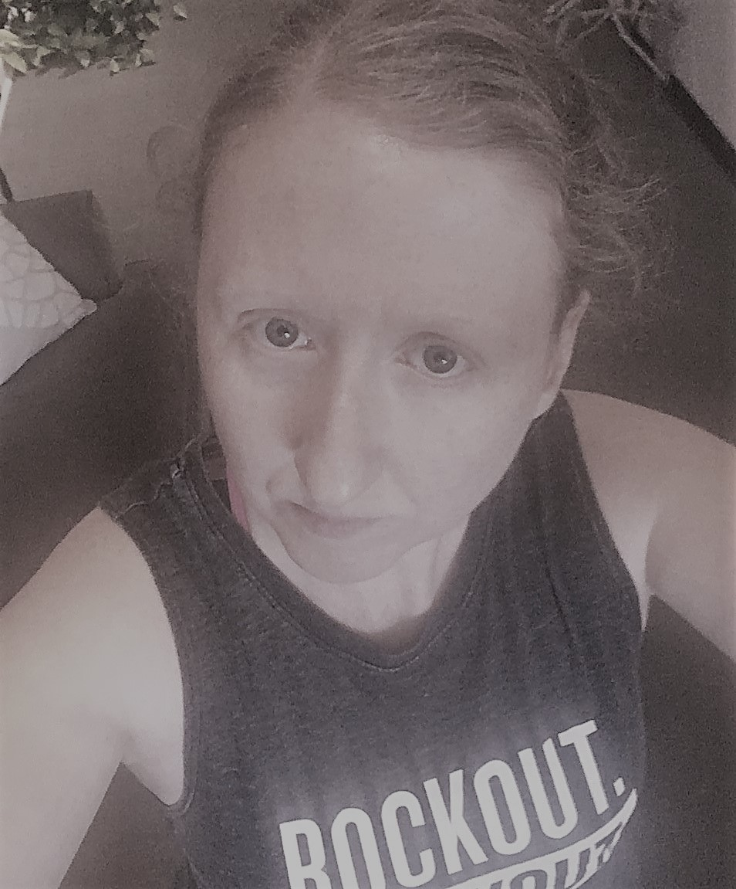

The starry-eyed dreams
I was fresh out of college with an Audio Production degree. I had fallen in love with a guy at college. He had a degree in the same thing I did. When I finished classes we moved out to California. I was young, dumb, and as infatuated as any 22 year old girl could possibly be.
The brutal reality
The relationship was not as expected, it was tumultuous at best. I'll spare you the details. Work was hard to come by. I spiraled into severe depression and poor eating habits. I had high blood pressure. My health suffered. Eventually, the clouds cleared and the boyfriend and I broke up.
The recovery and the reboot
I moved back to St. Louis and found stable employment. I joined a gym and started taking fitness classes. I started eating better, my mental and physical health improved. I accidentally stumbled upon POUND fitness and ordered a DVD and a pair of Ripstix. It was love at first strike! I wanted to help others and I had to teach POUND. It is a cardio jam session that will make you feel like a rockstar! POUND uses Pilates-based movements combined with Ripstix and drumming set to a rockin' setlist. It is a great way to get healthy, release stress, and have a little fun while doing it. Fitness is a passion, but POUND is my true love.My story is not over. Always a work in progress! 